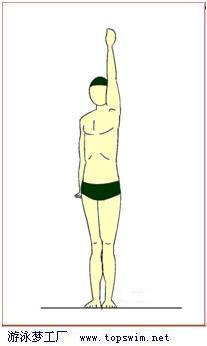

通过送肩形成侧超转体
侧超转体在自由泳和仰泳中具有重要意义。在自由泳中，当手臂前伸至超伸并产生侧超转体时，协同打腿动作产生滚动，形成很佳的流线形减少了阻力；此时这一边体侧形成的刚体使髋－手相连得以实现，提高了“髋部发动机”输出，输入功率比例，并且使呼吸变得容易。在仰泳中侧超转体（转动方向与自由泳相反）起到同样重要作用。
侧超转体的作用是协同“髋部发动机”工作，侧超转体可以通过陆地练习来体会，在水中，则是通过送肩动作来实现。在水做好侧超转体还需有一个适应过程。
侧超转体的陆地练习
准备：左手臂高举拉直、紧贴耳朵，全身挺直，双足着地。
动作：身体左侧往下、往上两个方向拉伸，右侧相对松一些；拉伸到极限时，左足稍踮起，命令自己再继续拉，哪怕再拉半公分也好！这时会发生奇妙的现象：身体会自动向右旋转，这叫侧体超直转体效应，也简称为侧超转体。 重复做2－3次。换右侧，做2－3次。

侧体超直转体效应的原理是，根据经典力学中刚体转动理论，当举左手左超直并且在身体左侧形成刚体时，重心向左侧移动并在左侧形成转轴，此时刚体的转动惯量最小，稍有力矩扰动就会产生角加速度引起转动，因为人们习惯往前倾的，此时身体自然以左侧为轴心向右转动了。侧超转体在游泳中具有重要意义。如在自由泳中，侧超转体能使“髋部发动机”发挥最大功效、使转体呼吸轻松易学；在仰泳中侧超转体同样发挥重要作用。